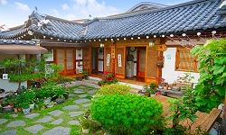
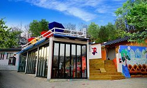
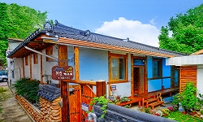
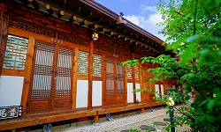
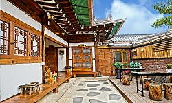
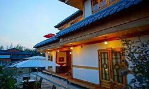

행복헌
행복헌 한옥 독채 펜션에 머무를 때 학인당, 향교길 도자기 갤러리,
강암 서예관 등 숙소에서 도보로 이동할 수 있는 가장 가까운 명소를 둘러보며 여행

공간의美(미)
전주 벽화마을 속 힐링공간 "공간의 美(미)" 입니다.
전주 풍경이 한눈에 보이는 전망좋은 테라스에서의 바베큐를 즐길 수 있습니다

한옥 해솔
복층형 다락과 편백나무의 은은한 향기 "전주 해솔"
해솔은 넓은 다락과 깨끗한 침구와 건강에 좋은 숙박시설을 보장

한옥고택 등용재
전주 한옥 마을 등용재 고택은 대한민국 전주에 위치한 4.5성급 호텔입니다.
이 호텔은 역사적인 아름다움으로 유명

한옥 예당
고즈넉하고 소박한 예당 한옥체험관은 한옥의 아름다움을 보여주는 시설로
청결한 객실로 관리

돼지꿈
한옥마을 중심에 위치하고 있어 여행이 편리하시며, 짐보관이 가능합니다.
냉장고, 전자레인지, 가스레인지, 커피포트, 조리도구, 커피, 차 등이 준비